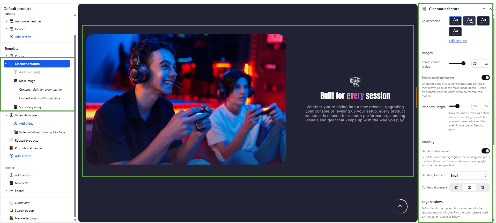
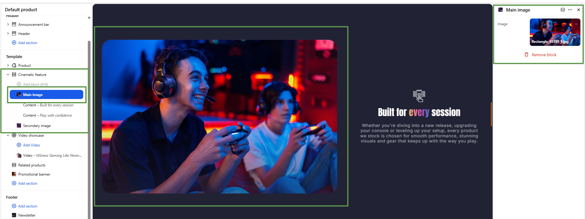
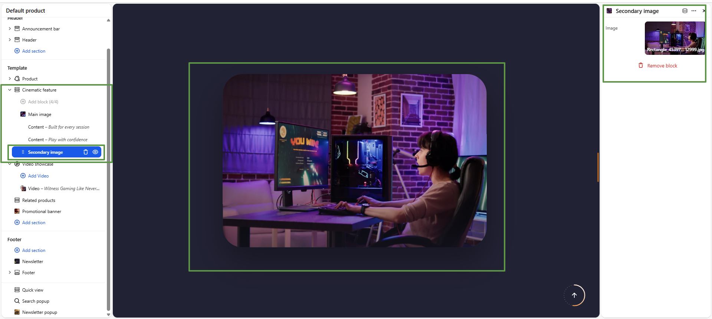

Theme documentation
Cinematic feature
The Cinematic feature section in the Falcon theme pairs large rounded images with short content blocks made of an icon, a heading, and a text. On desktop, with scroll animations on, the first content block starts centered and moves aside as the main image opens while visitors scroll.

Setup
Steps to Set Up the Cinematic Feature Section in Falcon

How to Configure the Cinematic Feature Section
- From your Shopify admin, go to Online Store → Themes.
- Click Customize on the Falcon theme.
- In the Theme Editor, open the template where you want to show the section (for example, the Default product template), click Add section, and select Cinematic feature.
- Adjust the section settings according to your preferences.
- Click Add block to add the Main image, Content, and Secondary image blocks. You can add up to 4 blocks to this section.
- Click Save to apply your changes.
Cinematic Feature Section Settings
- Color scheme: Choose a color scheme for the section. Use Edit scheme to customize the selected scheme.
-
Images:
- Image corner radius: Set how rounded the corners of the images are, using the slider (for example, 30px).
- Enable scroll animations: Turn this option on so that, on desktop, the first content block starts centered and then moves aside as the main image opens. It is turned off automatically for visitors who prefer reduced motion.
- Intro scroll length: Set how far visitors scroll, as a share of the screen height, while the content moves aside and the main image opens (for example, 100%). Desktop only.
-
Heading:
- Highlight italic words: Select the words to highlight in the heading and press the italic (I) button. Those words are shown upright with the theme’s gradient.
- Heading font size: Choose the size of the headings (for example, Small).
- Content alignment: Align the content to the left, center, or right.
-
Edge shadows: Softly blend the top and bottom edges into the sections
around this one. Pick the color scheme used by the section above or below.
- Show top shadow: Turn this option on to display a shadow along the top edge.
- Top shadow color scheme: Select the color scheme for the top shadow.
- Top shadow height: Adjust the height of the top shadow.
- Show bottom shadow: Turn this option on to display a shadow along the bottom edge.
- Bottom shadow color scheme: Select the color scheme for the bottom shadow.
- Bottom shadow height: Adjust the height of the bottom shadow.
-
Desktop spacing:
- Padding top: Adjust the top spacing on desktop screens (for example, 10px).
- Padding bottom: Adjust the bottom spacing on desktop screens (for example, 30px).
-
Mobile spacing:
- Padding top: Adjust the top spacing on mobile screens (for example, 40px).
- Padding bottom: Adjust the bottom spacing on mobile screens (for example, 40px).
Blocks
Cinematic Feature Block Settings
The section is built from blocks. You can add up to 4 blocks, such as one Main image, two Content blocks, and one Secondary image.
Main Image Block

The Main image block is the large rounded image shown beside the content.
- Image: Select or upload the main image.
Content Block
Each Content block shows an icon, a heading, and a text beside the images. You can use two Content blocks, for example Built for every session and Play with confidence. With scroll animations on, the first Content block starts centered and then moves aside as the main image opens.
Secondary Image Block

The Secondary image block adds a second rounded image to the section.
- Image: Select or upload the secondary image.
Questions
Frequently asked questions
In the Theme Editor, open the template where you want to show it (for example, the Default product template), click Add section, and select Cinematic feature.
Turn off Enable scroll animations under Images in the section settings. The animation is also turned off automatically for visitors who prefer reduced motion.
Use Intro scroll length under Images. It sets how far visitors scroll, as a share of the screen height, while the content moves aside and the main image opens. It applies on desktop only.
You can add up to 4 blocks to the section, for example one Main image, two Content blocks, and one Secondary image.